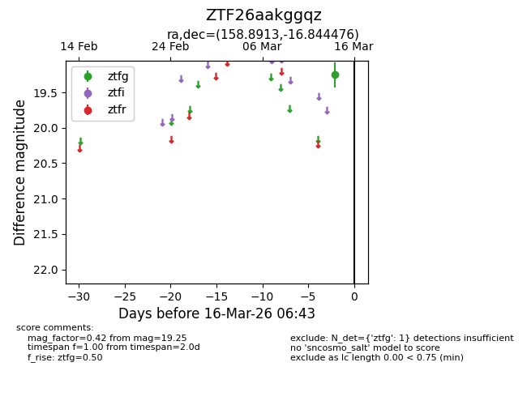
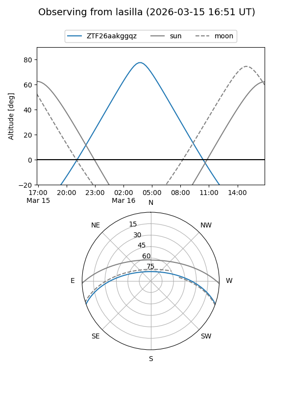
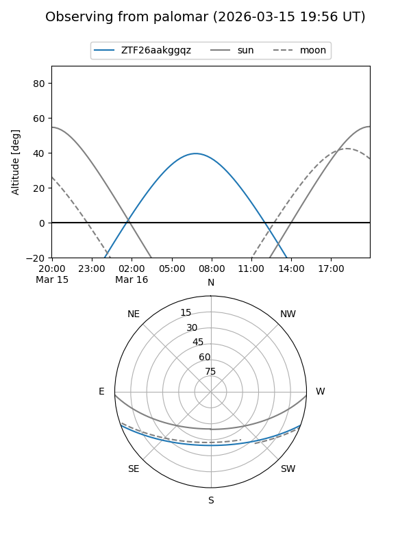

ZTF26aakggqz
Target ZTF26aakggqz at 2026-03-16 06:45
Aliases and brokers:
FINK: link
Lasair: link
ALeRCE: link
alt names
ZTF26aakggqz (ztf,fink_ztf)
Coordinates:
equatorial (ra, dec) = 158.8913,-16.84448
equatorial (HMS+DMS) = 10:35:33.90,-16:50:40.11
galactic (l, b) = (262.1463,+35.05120)
Flags:
Photometry:
last ztfg=19.25
1 ztfg detections
Lightcurve

Visibility


Additional plots